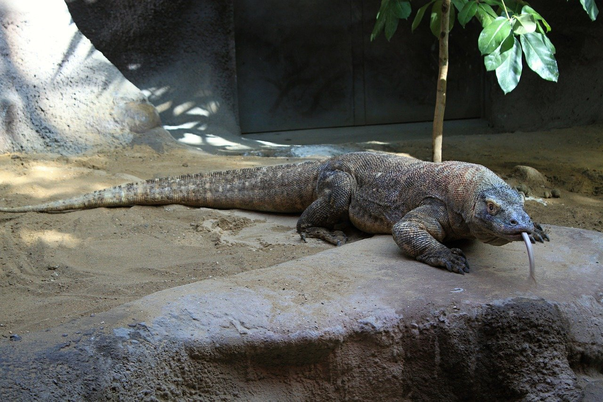
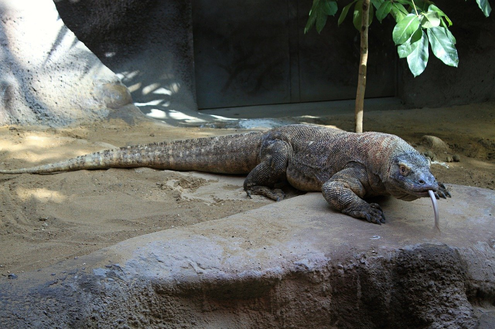

A page dedicated to my favorite animal, the Komodo Dragon, and some other information regarding the group of animals they come from.
 

The Komodo
My favorite animals at the moment are monitor lizards, and of all the monitor lizards, the Komodo dragon is my favorite. The Komodo is the largest monitor lizard and is endemic to the Indonesian Island of Komodo, from where it gets its name. It is the dominant organism in the ecosystem of the Komodo islands and boast a fearsome reputation due to their large size.
Fun Facts about Komodo Dragons
- It is debated whether or not the komodo dragon is venemous, it is undeniable that their bite causes shock and blood loss.
- The main threat to komodo dragons besides humans are other komodo dragons, making them an apex predator on Komodo.
- The komodo dragon is a nationally protected animal within Indonesia.
Other Types of Monitor Lizards
| Name | Conservation | Endemic Range |
|---|---|---|
| Perentie | Least Concern | Australia |
| Nile Monitor | Least Concern | Nile Basin, Sub-Saharan Africa |
| Asian Monitor | Least Concern | Southeast and East Asia |